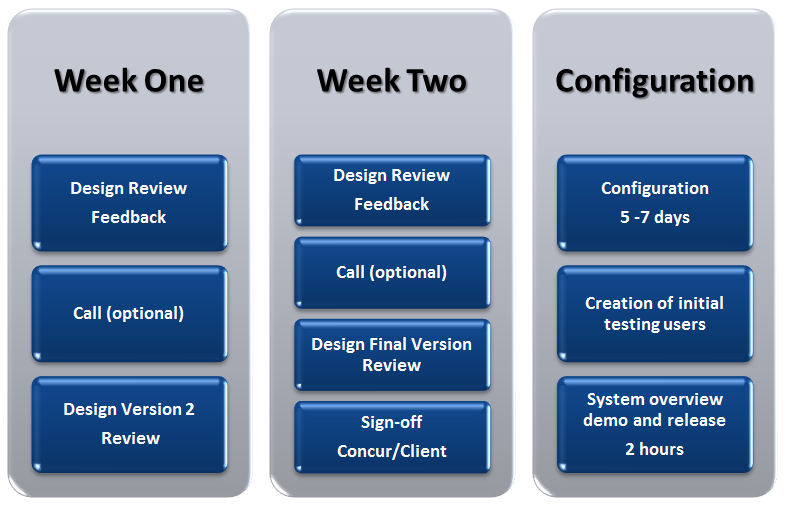

Design Review Timeline
Following the design session Concur will provide the Customer with version 1 of the Expense Design Document. This first version will contain a number of Action items for the Customer to confirm/clarify. The design review timeline is expected to take approximately 2 weeks.
Below is a typical design review timeline
